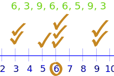

How to Find the Mode or Modal Value
The mode is simply the number which appears most often.

Example:
In {6, 3, 9, 6, 6, 5, 9, 3} the Mode is 6, as it occurs most often.
Finding the Mode
To find the mode it is best to put the numbers in order (makes it easier to count them), then count how many of each number. A number that appears most often is the mode.
Example:
3, 7, 5, 13, 20, 23, 39, 23, 40, 23, 14, 12, 56, 23, 29
In order these numbers are:
3, 5, 7, 12, 13, 14, 20, 23, 23, 23, 23, 29, 39, 40, 56
We can now easily see which numbers appear most often.
In this case the mode is 23.
Another Example: {19, 8, 29, 35, 19, 28, 15}
Arrange them in order: {8, 15, 19, 19, 28, 29, 35}
19 appears twice, all the rest appear only once, so 19 is the mode.
How to remember? Think "mode is most"
More Than One Mode
We can have more than one mode.
Example: {1, 3, 3, 3, 4, 4, 6, 6, 6, 9}
3 appears three times, as does 6.
So there are two modes: at 3 and 6
Having two modes is called "bimodal".
Having more than two modes is called "multimodal".
Try it Yourself
Grouping
In some cases (such as when all values appear the same number of times) the mode is not useful. But we can group the values to see if one group has more than the others.
Example: {4, 7, 11, 16, 20, 22, 25, 26, 33}
Each value occurs once, so let us try to group them.
We can try groups of 10:
- 0-9: 2 values (4 and 7)
- 10-19: 2 values (11 and 16)
- 20-29: 4 values (20, 22, 25 and 26)
- 30-39: 1 value (33)
In groups of 10, the "20s" appear most often, so we could choose 25 (the middle of the 20s group) as the mode.
You could use different groupings and get a different answer.
Grouping also helps to find what the typical values are when the real world messes things up!
Example: How long to fill a pallet?

Philip recorded how long it takes to fill a pallet in minutes:
{35, 36, 32, 42, 58, 56, 35, 39, 46, 47, 34, 37}
It takes longer when there is break time or lunch so an average is not very useful.
But grouping by 5s gives:
- 30-34: 2
- 35-39: 5
- 40-44: 1
- 45-49: 2
- 50-54: 0
- 54-59: 2
"35-39" appear most often, so we can say it normally takes about 37 minutes to fill a pallet.